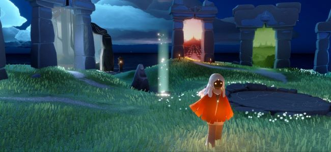
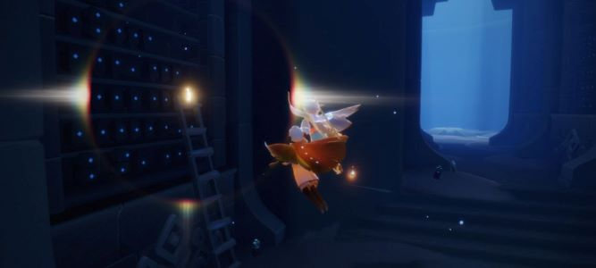
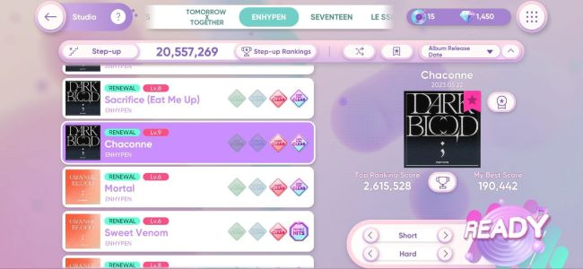
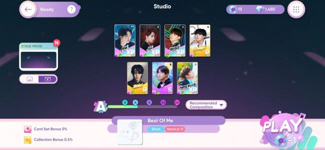

I have a really big interest in playing games!! I play a lot of games but I will only be showing two games that I actively playing at the moment which is the first one is Sky:Children of Light.


personally, I like this game a lot because of how beautifully made it was, even the scenery out of this world! the game main goals is to help lost souls to be free from their bad past and made them as free spirit. from my personal experience too, this game has a lot of kind and helping players that made my heart warm and full whenever someone lend me a helping hand!!
video of me completing the aurora quest (my favourite quest ever)
This is another game that I play a lot in my free times! it's called Rhythm Hive which is a rhythm game styled that is filled with song from Hybe Entertainment artists. I've always have interest in rhythm games since I was 14 years old and other rhythm games I've played are such as Superstar BTS, Superstar JYP, Superstar STAYC, Colorful Stage: Hatsune Miku, Osu!, and Ensemble Stars.


I found it very fun to play with rhythm games because I like the way it helps me increased my focus span because in this genre of game you need to be very focus with every tiles movement!
This is a video of me playing Rhythm Hive (song is Run Away-TXT)